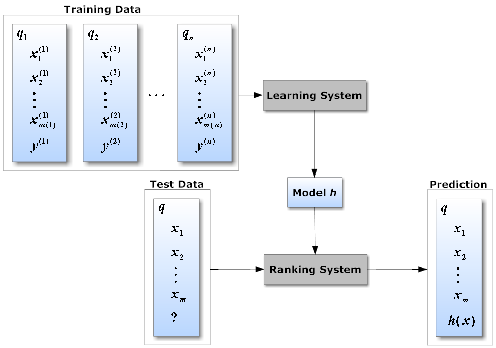
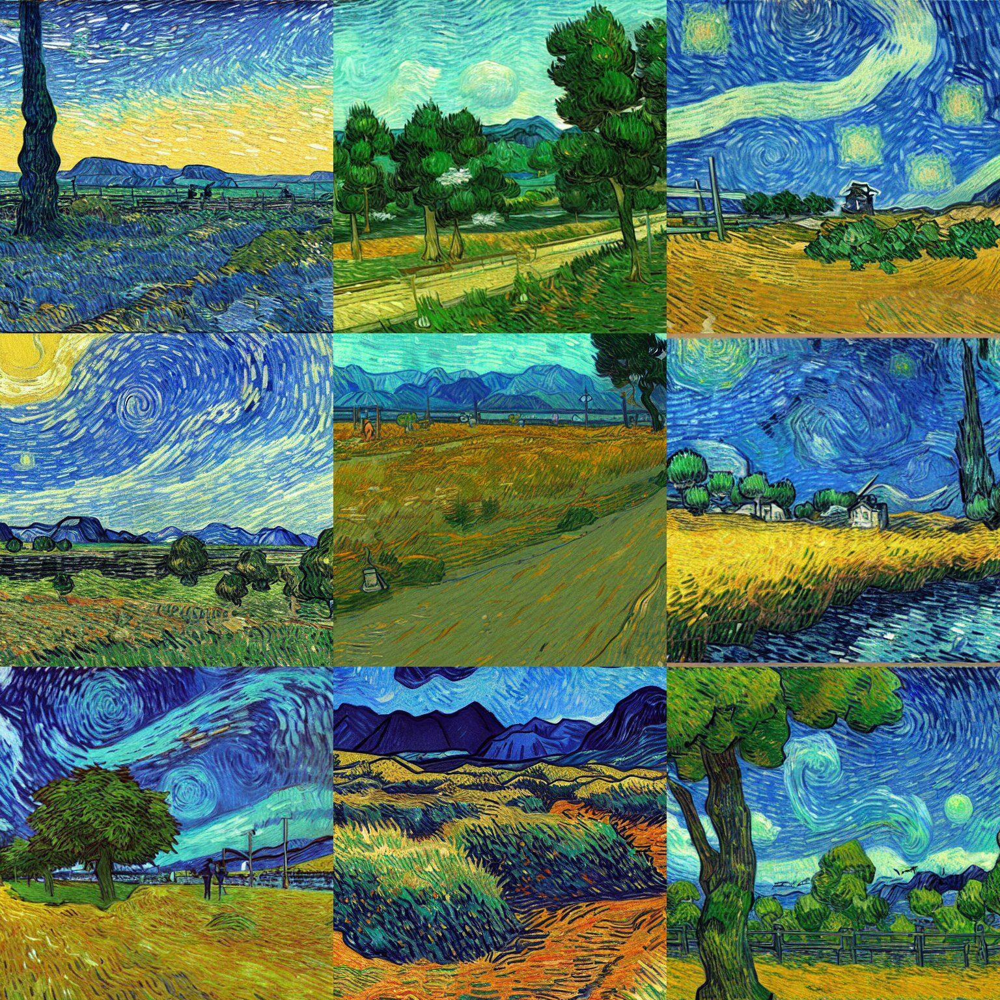
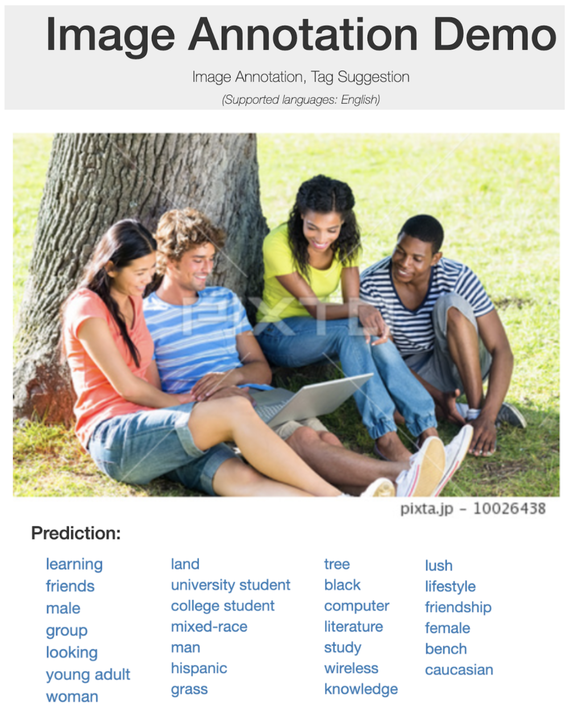
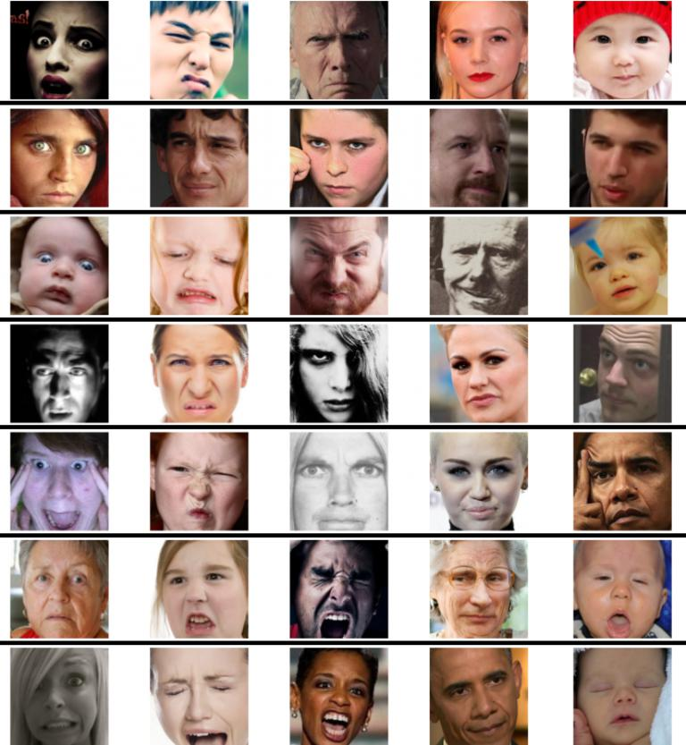
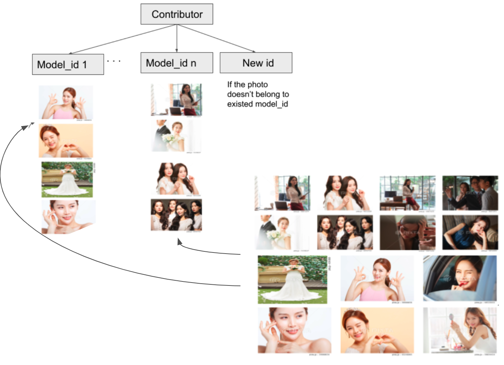
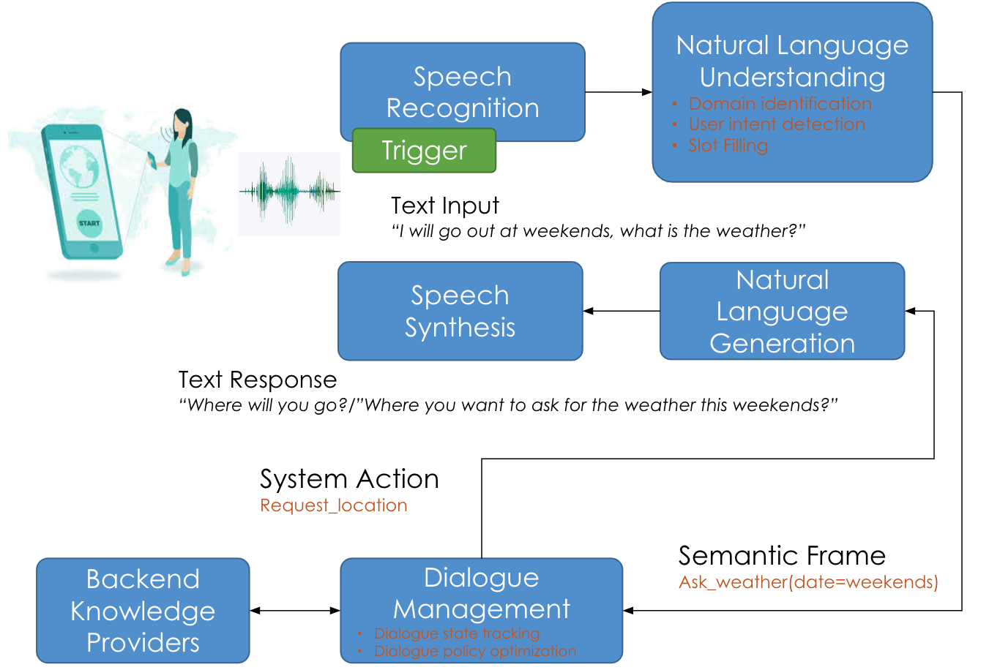

Projects
How I take AI from a business problem to a production system — architecture, flow, my role, and the impact it created. The problems grow in complexity and the stack keeps pace with the field — from CNNs to Vision Transformers, foundation models and agents.
-
Auto Review — AI-Powered Image Quality AssessmentContext Manual image QA across 20+ quality standards couldn't keep up with catalog growth on PixtaStock.Architecture Lightweight CV models behind an automated review pipeline on the cloud, scoring up to 30,000 images/day against every standard before human escalation.Decision Chose lightweight CV models over a heavy VLM: at 30K images/day the small accuracy gain didn't justify the extra cost and latency, so I optimised for throughput and kept humans in the loop for edge cases.Role Chief architect — set the research direction, designed the model architecture & evaluation, and led the rollout into production.Impact ~70% lower review cost vs. the fully manual baseline, at 99.5% precision on the model's auto-review decisions; now the standing review pipeline in production at Pixta.Upload · 30K/day→ Lightweight CV models→ 20+ standard checks→ Pass / human escalation
-
Context Estimate age accurately from a single face crop — no body context, using public training data only.Architecture DINOv3-ViT-L/16 backbone with CORAL ordinal regression and four-phase progressive fine-tuning; exported to ONNX for deployment.Decision Face-only over body-aware (MiVOLO) to stay deployable & privacy-safe from a single crop — and still beat it on accuracy.Role Sole author — dataset, model, benchmark and open-source release.Impact MAE 3.58 yr on LAGENDA 84k, beating body-aware MiVOLO v2 (3.86); ranks #1 among non-LLM methods on the eight-dataset FaceAge benchmark.Face crop→ DINOv3-ViT-L/16→ CORAL ordinal head→ ONNX serving
-
Context Regulated hospitality & gaming need reliable, real-time identity verification (e.g. self-excluded gamblers).Architecture Full-stack face recognition across edge & cloud — >10,000 identifiers at 30 FPS, co-developed with Oxford University advisers.Decision Split inference across edge & cloud to hold 30 FPS while scaling past 10,000 identities under regulatory constraints.Role Co-founder & AI architect — led the AI architecture, model development and customer deployment.Impact >99.4% accuracy in production; deployed across UK hospitality & regulated gaming.Camera · edge→ Detect + embed→ Match >10k IDs→ Alert / verify · cloud
-

Learning-to-Rank — Search Re-Ranking SystemContext Default search ordering left revenue on the table across a large stock-photo catalog.Architecture LightGBM re-ranking layer trained on billions of user signals, with full MLOps automation from data ingestion to rollout.Decision A re-ranking layer over existing signals — not an end-to-end search rewrite — for measurable lift at low risk to live search.Role Led the re-ranking design, offline/online experimentation and MLOps rollout.Impact ~6% revenue lift (~$30K/month), running in production at Pixta. -
Developing efficient memory management mechanisms to eliminate bottlenecks and enable LLMs / LVMs to run reliably on NVIDIA Jetson and similar edge hardware, in collaboration with Dr. Ismet Dagli.
-
Voice AI product with real-time transcription, speaker diarization, content summarization, and semantic search — built on LLMs and state-of-the-art audio processing research.
-

AI Image Generation — Stable Diffusion for Stock PhotographyAdapted Stable Diffusion to generate commercial-grade stock photography via fine-tuning and LoRA. Unified app supporting txt2img, img2img, inpaint, outpaint, upscale, and variation. -
AI Agent Automation — Daily Workflow EngineeringContext Repetitive daily engineering & research tasks — reviews, literature, reporting — quietly consume hours.Architecture Multi-model agent orchestration with Claude Code & Gemini, observability via Langfuse, and LLM security guardrails.Decision Multi-model orchestration instead of one provider — route each task to the strongest model, with Langfuse to see what the agents actually do.Role Designed and built the agent suite end-to-end.Impact Turns hours of manual work into seconds — code review & PR summaries, daily ArXiv digest, meeting prep, pipeline health checks, and report drafting from raw logs.
-

Tag Suggestion — Large-Scale Visual Auto-AnnotationMulti-label classification across 25,000+ visual categories on 5M+ samples — re-architected three times to keep pace: ResNest → Meshed-Memory Transformer → pure Vision Transformer. -

Face Attribute Recognition — Age & EmotionMulti-task model predicting age and emotion using context-aware recognition to fuse facial and scene-level features on a noisy, in-the-wild dataset. -

Face Recognition — Unsupervised Identity ClusteringClustered hundreds of thousands of unlabeled face images for automatic identity labeling, overcoming extreme class count, attribute variety, and label noise. -
 Sorgenia Voice Bot — Italy's First Energy-Sector ChatbotThe first voice bot in the energy sector in Italy, built for Sorgenia at Pi School, Rome using Dialogflow and custom NLU pipelines.
Sorgenia Voice Bot — Italy's First Energy-Sector ChatbotThe first voice bot in the energy sector in Italy, built for Sorgenia at Pi School, Rome using Dialogflow and custom NLU pipelines. -

Panasonic Core Conversational SystemCore NLP platform covering speaker identification, speech recognition, wake-word detection, and multi-domain dialog. Piloted at a healthcare center for elderly residents in Kyoto, Japan.